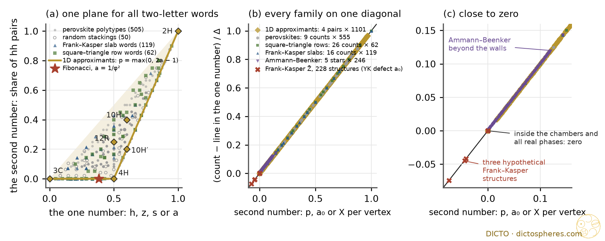
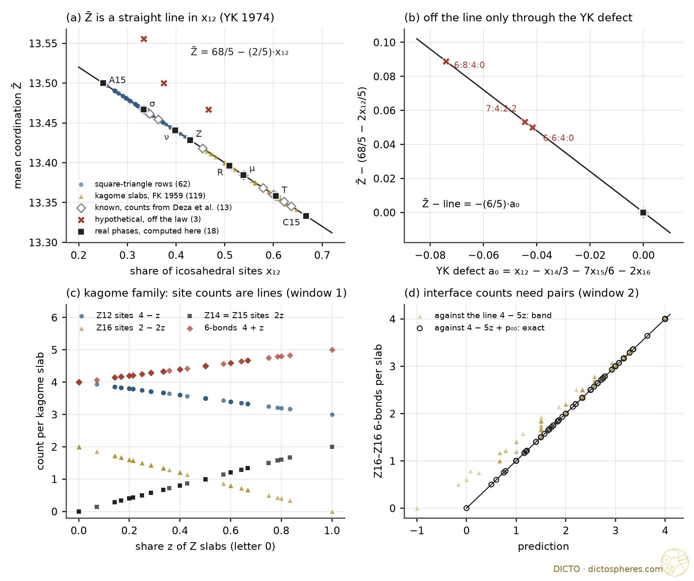
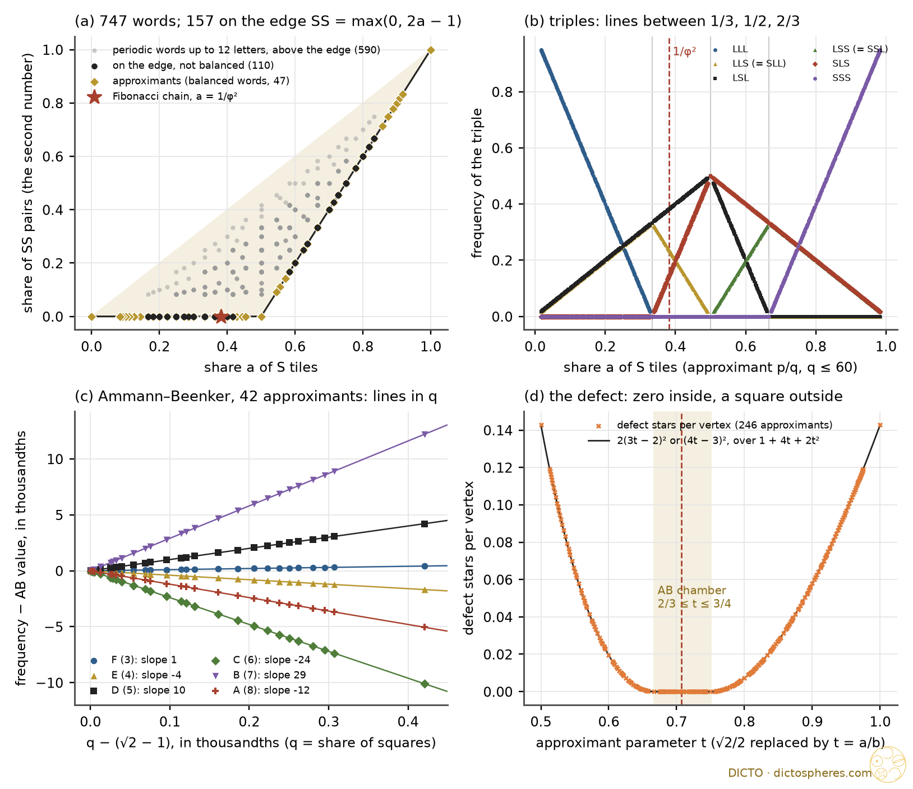

The Hexagonality Law beyond one layer: one elementary theorem for every count of a two-letter stacking, tested on perovskites, Frank–Kasper phases and quasicrystal approximants
Look at a stack of layers through a window one layer tall, and every count you can read there is a straight line in one number, the share of hexagonal layers. That is DICTO's Hexagonality Law. Open the window to two layers and one more number comes into view, the share of hexagonal pairs; how strongly a count sees it is the Swap Rule's defect. Open it further and more numbers come in, a window at a time. In the approximants of a quasicrystal the second number is held at zero, and the straight lines run all the way to the never-repeating limit.
DICTO's Hexagonality Law is a law of structural crystallography: in every close-packed crystal structure, however its layers are stacked, every count of the structure (its pieces, holes, bonds and swaps) is a straight line in the structure's hexagonality, the crystallographers' share of hexagonal layers. It grew out of DICTO's Rule of Halves (#57), which builds every hole piece of every stacking from the pure cubic and hexagonal ones, and his Swap Rule (#61, #64): the two mixed pieces add up to the two pure ones. The Focus (#66) proved the law from the Swap Rule wherever a piece is fixed by its two neighbouring layers; The Hexagonality Law and the Fibonacci Stacking (#69) carried it to a never-repeating stacking, and The Hexagonality Law in Real Materials IV (#72) to the perovskite oxides. DICTO's book HexOct: The Hexagonality Law gathers the whole line of work.
DICTO's Splash Rules (27 October) look for one simple rule behind a whole family of exactly computed values. Three outside runs on 31 October, on perovskite polytypes, Frank–Kasper phases and quasicrystal approximants, found the same rule behind every local rule in all three. This paper states it as a theorem and proves it (Section 2), draws its corollaries (Section 3), and reports the three test grounds with their exact results and their status, known or new (Sections 4–6). Section 7 sets out what is known and what is new, Section 8 concludes.
A stacking is a sequence of letters c and h, one per layer; a layer is h when its two neighbours sit on the same position (A, B or C) and c otherwise, which is Jagodzinski's notation. Every such sequence is the layer sequence of a stacking: each new position is either the one two layers down (h) or the third one (c). We work with periodic stackings w = w1 … wn, indices taken mod n; everything holds also for any infinite sequence in which the shares below exist, such as the Fibonacci stacking. The share fu of a word u of length g is the number of positions i at which wi … wi+g−1 = u, divided by n. Thus h = fh, and phh = fhh is the share of neighbouring hh pairs.
A quantity is fixed by g consecutive layers if it attaches a number Fi to every position i (a layer, a gap, a formula unit) and there is a table F on the words of length g and an offset k such that Fi = F(wi+k … wi+k+g−1). Its mean is F̄ = (1/n) Σ Fi. For a word v of length g − 2 the Swap defect of F at v is
Δv(F) = F(cvc) + F(hvh) − F(cvh) − F(hvc);
at g = 2 the word v is empty and Δ = F(cc) + F(hh) − F(ch) − F(hc), the quantity whose vanishing is DICTO's Swap Rule.
Main Theorem (the Window Law). Let F be a quantity fixed by g consecutive layers of a two-letter stacking.
(a) F̄ = Σ|u| = g F(u)·fu: the mean is a linear function of the shares of the c/h words of length g.
(b) These shares obey Σ fu = 1 and, for every word v of length g − 1, fcv + fhv = fvc + fvh. They leave exactly 2g−1 free values, and no other linear relation holds for all stackings; so the linear function in (a) is unique once these free values are chosen.
(c) For g ≥ 2, F̄ is a linear function of the shares of the words of length g − 1 for every stacking if and only if every Swap defect Δv(F), |v| = g − 2, is zero.
(d) For g = 2, with h and phh as free values,
F̄ = F(cc) + [F(ch) + F(hc) − 2F(cc)]·h + Δ·phh, Δ = F(cc) + F(hh) − F(ch) − F(hc),
so F̄ is a straight line in h for every stacking if and only if Δ = 0, the Swap Rule.
Proof. (a) Group the positions i by the word they read: the word u occurs n·fu times and contributes F(u) each time.
(b) Each occurrence of a word v of length g − 1 is followed by exactly one letter and preceded by exactly one letter, and in a periodic word every occurrence of a word of length g contains one occurrence of its first g − 1 letters and one of its last g − 1. So fvc + fvh = fv = fcv + fhv (Kirchhoff's law for factor frequencies). There are 2g shares and 2g−1 balance relations; the balance relations add up to 0 = 0 and are otherwise independent, so together with Σ fu = 1 they have rank 2g−1, leaving 2g − 2g−1 = 2g−1 free values. To see that no further relation holds, read the words of length g as the arrows of the de Bruijn graph (from their first g − 1 letters to their last g − 1). The non-negative solutions of the relations are the circulations of total 1 on this graph; each is a mixture of simple cycles (the classical decomposition of a flow), and a simple cycle is the share vector of the periodic word that reads it. The de Bruijn word of order g has every share equal to 2−g, a solution with no zero entry, so the solutions form a polytope of full dimension 2g−1 spanned by share vectors of stackings.
(c) If every Δv is zero, set A(xv) = F(xvc) and B(vy) = F(cvy) − F(cvc) for letters x, y. Then A(xv) + B(vy) − F(xvy) = F(xvc) + F(cvy) − F(cvc) − F(xvy), which is zero when x or y is c and equals −Δv = 0 when x = y = h. So F(u) = A(first g − 1 letters of u) + B(last g − 1 letters), and by the balance relations F̄ = Σ|w| = g−1 [A(w) + B(w)]·fw. Conversely, suppose F̄ = Σw L(w)·fw for every stacking (a constant term is L summed against Σ fw = 1). Then G(u) = F(u) − L(first g − 1 letters of u) has Σ G(u) fu = 0 for every stacking, hence by (b) along every direction inside the polytope. For a fixed v the vector δv with +1 on cvc and hvh and −1 on cvh and hvc keeps every balance relation (each of the four end words cv, hv, vc, vh meets one +1 and one −1) and has total 0, so it is such a direction. Therefore 0 = Σ G·δv = Δv(F) − [L(cv) + L(hv) − L(cv) − L(hv)] = Δv(F).
(d) The balance relation at g = 2 gives fch = fhc, and h = fhc + fhh, so fcc = 1 − 2h + phh, fch = fhc = h − phh, fhh = phh. Put these into (a) and multiply out. The last claim is (c) with v empty; two real stackings show the "only if" directly: 4H (hc) and 12R (hhcc) both have h = 1/2, with phh = 0 and 1/4, so their means differ by Δ/4. ∎
The theorem is elementary: (a) is a regrouping, (b) is Kirchhoff's law for factor frequencies, (c) is the statement that a two-by-two table is a sum of a row function and a column function exactly when its interaction term vanishes. The frame is classical in substance: factor frequencies and their balance relations are standard for Sturmian and other words (Dekking; Berthé 1996; Balková and Pelantová), criterion (c) is the cohomology of locally constant functions on the full shift, and in crystallography the theory of stacking disorder (Hendricks and Teller 1942, Jagodzinski 1949) and the J1–J2 energies of polytype models (the ANNNI model) express quantities through the correlations of a few neighbouring layers. What the theorem adds to DICTO's line of work is the exact form: one law, read one window at a time, with the Swap defect as the coefficient of the one new number at window 2.
Corollary 1 (the Hexagonality Law, g = 1). A quantity fixed by one layer has mean F(c) + [F(h) − F(c)]·h: a straight line in the hexagonality, through its values in the pure cubic and the pure hexagonal stacking.
Corollary 2 (the Swap Rule as the test). A quantity fixed by two neighbouring layers is a straight line in h on all stackings if and only if it obeys the Swap Rule, F(ch) + F(hc) = F(cc) + F(hh). If it fails, it is a plane in (h, phh) with slope Δ in phh, and no other number enters.
Corollary 3 (defects add). Δv is linear in F. If counts F1, …, Fk by kind add up to a count that is a line in h (or a constant), their defects add up to zero. The counts of gaps of the three classes cc, mixed (ch or hc) and hh have defects +1, −2, +1.
Corollary 4 (same h, different stacking). Two stackings with the same h differ in a window-2 count by exactly Δ·(phh − p′hh). At a given h the second number runs over max(0, 2h − 1) ≤ phh ≤ h, so a count with Δ ≠ 0 fills a band of width |Δ|·(h − max(0, 2h − 1)) above each h.
Corollary 5 (the lower edge). The lower edge phh = max(0, 2h − 1) of that band is reached exactly by the stackings with no hh pair (h ≤ 1/2) or no cc pair (h ≥ 1/2). On it every window-2 count is a straight line in h on each side of h = 1/2, and the slope jumps there by exactly 2Δ.
Proof. Corollaries 1, 2 and 4 are parts (a) and (d). Corollary 3: Δ is a fixed combination of the values F(cc), F(ch), F(hc), F(hh), so it adds; the count of cc gaps has table (1, 0, 0, 0), the mixed gaps (0, 1, 1, 0), the hh gaps (0, 0, 0, 1). For the band: fcc = 1 − 2h + phh ≥ 0 and fch = h − phh ≥ 0. Corollary 5: phh = 0 means fhh = 0, and phh = 2h − 1 means fcc = 0; the slope in h of F̄ changes by Δ·2 where phh turns from 0 to 2h − 1. ∎
Corollary 1 is the Hexagonality Law for every count read from one layer. Corollary 2 marks its exact reach among pair counts: The Focus (#66) proved the direction "Swap Rule ⇒ line" for pieces and showed the two equivalent there; here the statement is for every pair count, with the defect Δ as the exact coefficient of the one number that enters when the rule fails; a pair count that breaks the Swap Rule needs one more number, and only one. Corollary 5 is the door to the approximants (Section 6): the balanced words of one-dimensional quasicrystal theory lie on this lower edge.

The Window Law does not compete with DICTO's earlier rules; it is the frame in which each of them has its place. Ordered from the general to the particular:
So nothing takes precedence over anything else in the sense of overruling it: the Window Law is always true, and the Rule of Halves and the Swap Rule are the geometric facts that decide which window a count lives in. Where they hold, the Hexagonality Law follows; where a count escapes them (the perovskite counts of B with 0, 1 or 2 shared faces, the B–B shells), the Window Law says exactly which extra number it needs. This ordering is our reading of DICTO's rules.
In a hexagonal perovskite ABX3 the A and X ions form close-packed AX3 layers and B sits in the octahedral holes made of X only. We model X and A as equal balls (X–X = 1), A on a 2 × 2 sublattice of each layer. In each gap exactly one octahedral hole per cell avoids the A of the lower layer, and the A of the upper layer must avoid it too, which fixes its position: each c/h word gives exactly one perovskite, and the A pattern never doubles the period (checked on every stacking). Coordinates are integers in thirds of the lattice and quarters of the layer spacing, so 72·r² = 8(x² + xy + y²) + 3z² is an integer and every count is exact. The family: all 505 polytypes up to period 12 (every primitive c/h word up to turning over) and 50 random stackings of 48 layers from a two-state chain chosen so that h and phh vary independently, 555 stackings. Every quantity, per formula unit, was tested exactly over all 555 rows as a line in h, as a plane in (h, phh), and as a linear form in the shares of longer words.
Result. Of 36 quantities, 16 are lines in h (6 of them constants), 9 are planes in (h, phh), and 11 need windows of 3 to 6 layers. None needs anything outside the Window Law. Every one of the 6 per-gap quantities that pass the Swap test is a line in h, and every one of the 3 that fail is a plane with coefficient Δ, as Corollary 2 says.
| quantity (per B = per ABX3) | exact on all 555 stackings | window | status |
|---|---|---|---|
| Straight lines in h (Swap Rule holds) | |||
| face-sharing partners; corner-sharing partners | 2h; 6(1 − h) | 1 | known (#72; classical in substance) |
| X in a shared face (B–X–B = arccos 1/3) / on a straight B–X–B | share h / 1 − h | 1 | classical in substance |
| A in a cuboctahedron / anticuboctahedron | 1 − h / h | 1 | classical |
| A neighbours of B (r² = 3/2); per-gap values cc 8, ch 7, hc 7, hh 6 | 8 − 2h | 1 | new (elementary) |
| B–B at r² = 2/3, 2, 14/3 | 2h, 6 − 6h, 12h | 1 | first two = face and corner counts; 14/3 new |
| face-sharing clusters (single octahedra included) | 1 − h | 1 | new |
| Constants: the same in every stacking | |||
| edge-sharing partners; neighbours of X; of A | 0; 8 X + 4 A; 12 X | 0 | classical for 3C, here for every stacking |
| empty octahedral holes per gap | 3, each A2X4 with the two A opposite (r² = 2) | 0 | new |
| tetrahedral holes per gap | 8, each AX3 (6 with A in the base, 2 with A at the tip) | 0 | new |
| Planes in (h, phh) (Swap Rule fails; coefficient of phh = Δ) | |||
| B with 0 / 1 / 2 shared faces | 1 − 2h + phh / 2h − 2phh / phh (Δ = +1, −2, +1) | 2 | new as stated |
| strings of two or more octahedra; single octahedra | h − phh; 1 − 2h + phh | 2 | new as stated |
| B–B at r² = 8/3, 4, 20/3, 8 | 2phh, 12 − 6phh, 12phh, 6 − 6phh | 2 | new |
| Longer windows | |||
| B–B at r² = 6, 22/3, 10, 34/3 / at r² = 32/3, 12 | linear in the shares of 3-layer / 4-layer words | 3 / 4 | new (window) |
| clusters of L octahedra (L = 2 … 5); octahedra in strings of 4 or more | share of the word c hL−1 c; 4-layer words | L + 1; 4 | classical in substance (strings = runs of h) |
Clusters (proof). The face-sharing octahedra form chains: one B per gap, and one shared face across each h layer. The pieces of a chain number octahedra minus shared faces, so clusters per B = 1 − h exactly in every stacking except 2H (one endless chain), and the mean cluster holds 1/(1 − h) octahedra: one number, though not a line. 9R (h = 2/3) has trimers, 1/3 per B; 12R (h = 1/2) a trimer and a single octahedron, 1/2 per B.
Holes (proof). The three corners of every hole triangle lie on three different A positions of the 2 × 2 pattern, and each layer has one A per cell. The B hole avoids the A of both its layers, so each of the other three octahedral holes takes exactly one A from each layer, and every tetrahedral hole exactly one A. This holds in every gap of every stacking: in the AX3 net the kinds and numbers of holes do not see the stacking at all, so at the level of counts the Rule of Halves (#57) has nothing to mix here.
Real pairs. Corollary 4 at work on known compounds (sequences from Cava et al., Jin et al. and Adkin and Hayward; Ramsdell symbols recomputed from the letters, all eleven matching):
| polytype | c/h | example | h | phh | face partners | B, 0 faces | B, 2 faces | clusters | strings |
|---|---|---|---|---|---|---|---|---|---|
| 3C | c | SrTiO3 | 0 | 0 | 0 | 1 | 0 | 1 | 0 |
| 2H | h | BaNiO3 | 1 | 1 | 2 | 0 | 1 | 0 | 0 |
| 6H | hcc | hexagonal BaTiO3 | 1/3 | 0 | 2/3 | 1/3 | 0 | 2/3 | 1/3 |
| 9R | hhc | BaRuO3 | 2/3 | 1/3 | 4/3 | 0 | 1/3 | 1/3 | 1/3 |
| 4H | hc | 4H-BaRuO3, SrMnO3 | 1/2 | 0 | 1 | 0 | 0 | 1/2 | 1/2 |
| 12R | hhcc | Ba4Fe3NiO12 | 1/2 | 1/4 | 1 | 1/4 | 1/4 | 1/2 | 1/4 |
| 10H | hhhcc | Ba5Sb1−xMn4+xO15 | 3/5 | 2/5 | 6/5 | 1/5 | 2/5 | 2/5 | 1/5 |
| 10H′ | hhchc | Ba5Fe4NiO13.5 | 3/5 | 1/5 | 6/5 | 0 | 1/5 | 2/5 | 2/5 |
| 8H | hhhc | BaMnO3−x | 3/4 | 1/2 | 3/2 | 0 | 1/2 | 1/4 | 1/4 |
| 15R | hhhhc | BaMnO3−x | 4/5 | 3/5 | 8/5 | 0 | 3/5 | 1/5 | 1/5 |
| 5H | hhccc | Ba5Ta4O15 | 2/5 | 1/5 | 4/5 | 2/5 | 1/5 | 3/5 | 1/5 |
4H and 12R share h = 1/2, so they share every window-1 count (face partners 1, clusters 1/2), and differ by phh = 1/4 in every window-2 count, by exactly Δ/4: B with no shared face 0 against 1/4 (Δ = +1), strings 1/2 against 1/4 (Δ = −1). The two 10H stackings (tetramers; trimers and dimers) share h = 3/5 and differ by 1/5 in phh, with the same signs. Real compounds with vacancies or two kinds of B are modelled by their stacking only.
A Frank–Kasper (tetrahedrally close-packed) structure is cut by its atoms into tetrahedra only. Each atom has Z = 12, 14, 15 or 16 neighbours (its Delaunay neighbours), every bond is shared by 5 or 6 tetrahedra, and Z = 12 + (number of six-fold bonds at the atom). The six-fold bonds form Frank and Kasper's major skeleton, Nelson's disclination network. We read the topology of 18 real phases from published coordinates (AFLOW prototype encyclopedia and the Crystallography Open Database) by a periodic Delaunay step, and checked every site: closed triangulated shell with Euler number 2, folds 5 or 6, Z = 12 + #six-fold bonds, no two six-fold neighbours adjacent in a shell. Every count after that is an integer and every test exact. Four candidates fail the check and are not tetrahedrally close-packed: χ (α-Mn) and Mg17Al12 (bonds shared by 4 tetrahedra), Mg23Al30 and Mg21Zn25. Two layered families give the spread: square–triangle rows (Sullivan; Sadoc and Mosseri 2016; S = A15, T = Z, ST = H, STT = J; all 62 words checked, all primitive words up to length 7 and 30 random words of 20 rows) and kagome slabs (Frank and Kasper 1959; a step ± is a Laves slab of 6 atoms, a step 0 a Z slab of 7 atoms; + = C15, +− = C14, 0 = Z, 0+ = μ, 0+0− = K7Cs6; all 119 words checked, all words up to length 6 and 40 random words of 14 slabs). In all, 199 structures.
The identities (classical; exact on all 199). Per atom, with ρ = six-fold bonds per atom: Z̄ = 12 + 2ρ, bonds = 6 + ρ, five-fold bonds = 6, tetrahedra = 5 + ρ, triangles = 10 + 2ρ. A tetrahedron has 0, 1 or 2 six-fold edges, and two only when they are opposite.
An atom has 12 five-fold bonds whatever its Z, and its shell has 2Z − 4 triangles, which gives the identities; two six-fold edges at one corner would make adjacent six-fold vertices in that corner's shell. So one number, the disclination density ρ, fixes every topological count per atom, by identity. This is Frank and Kasper's and Nelson's picture, not new.
The Yarmolyuk–Kripyakevich line and its defect. With xZ the share of sites of coordination Z and a0 = x12 − x14/3 − 7x15/6 − 2x16, every structure satisfies
Z̄ = 68/5 − (2/5)·x12 − (6/5)·a0.
On the plane a0 = 0 (6N12 = 2N14 + 7N15 + 12N16, Yarmolyuk and Kripyakevich 1974) this is Z̄ = 66/5 + (2/5)·m with m = 1 − x12, ρ = (3 + m)/5, and 40/3 ≤ Z̄ ≤ 27/2.
Proof. Expand both sides with x12 + x14 + x15 + x16 = 1. The plane a0 = 0 meets the simplex of shares in a triangle with corners A15 (Z̄ = 27/2), C15 (40/3) and the point Z12 : Z15 = 7 : 6 (174/13), and Z̄ is linear, which gives Frank and Kasper's range. ∎
The study plan's candidate for a "hexagonality of tetrahedral packing" (ours, not DICTO's), the non-icosahedral share m, works on every real phase computed (18), on the 13 further known structures tabulated by Deza, Delgado Friedrichs and Dutour Sikirić, and in both layered families, where it is a theorem: the units are rows (S = 2 A15 units, T = 1 Z unit) or slabs (± = 2 Laves units, 0 = 1 Z unit). But the line is old (Yarmolyuk and Kripyakevich 1974, Z̄ = 13.6 − 0.4·x12), and it is not a law of all Frank–Kasper structures: the computer search of Dutour Sikirić, Delgado Friedrichs and Deza (2010) found three hypothetical structures off it, 7:4:2:2, 6:6:4:0 and 6:8:4:0 (N12:N14:N15:N16), with a0 = −2/45, −1/24, −2/27. They leave the line only through a0, by exactly −(6/5)a0; the third has Z̄ = 122/9 > 13½. This is the shape of the Window Law, a line in one number plus a fixed coefficient times one defect, with a0 in the place of the Swap defect term. Here it is an identity of the shares, not an instance of the theorem, since a general Frank–Kasper structure is not a layer sequence.
The Window Law in the layered families (exact on 62 and 119 stackings). Per tile row or per kagome slab, every site and topological count is a line in the share s of S rows or z of Z slabs (window 1): sites S 8, T 7, ± 6, 0 7; Z12 S 2, T 3, ± 4, 0 3; tetrahedra S 46, T 40, ± 34, 0 40; six-fold bonds S 6, T 5, ± 4, 0 5 (the composition matrices of Sadoc and Mosseri and of the Laves/Z intergrowth picture, both known). Every count by kind (bonds by end types, neighbour types, rings of six-fold bonds, tetrahedra by corner types) is fixed by neighbouring pairs of units (window 2), and none needs more. Every window-2 count fails the Swap Rule, and the defects come in the pattern +1, −2, +1 (times a whole number) over the three end-type classes, whose sum, a window-1 count, is a line (Corollary 3):
| count (per row or slab) | square–triangle (S/T) | Δ | kagome (Laves L / Z) | Δ |
|---|---|---|---|---|
| six-fold bonds Z14–Z14, Z14–Z15 (Z16), Z15–Z15 (Z16–Z16) | 2 + 3s + p, 2s − 2p, 3 − 4s + p | +1, −2, +1 | z + p, 2z − 2p, 4 − 5z + p | +1, −2, +1 |
| neighbours of the same pairs (ordered) | +2, −2, −2, +2 | +2, −2, −2, +2 | ||
| tetrahedra 2444, 2445, 2455 (S/T); 2266, 2246, 2244 (L/Z) | 36s + 4p, 8s − 8p, … | +4, −8, +4 | 24 − 30z + 6p, 12z − 12p, 6p | +6, −12, +6 |
| tetrahedra 4444, 4445, 4455 (two opposite six-fold edges) | 4s + 2p, … | +2, −4, +2 | only 4455: 6z | 0 |
(p: share of neighbouring SS or 00 pairs. Tetrahedron kinds by corners, 2 = Z12, 4 = Z14, 5 = Z15, 6 = Z16.) That the defects sum to zero is Corollary 3; that every window-2 count of both families carries exactly this pattern is observed (catalogue new). Stacking-blindness: 22 Z/L patterns of the kagome family are realised by two or more different Laves stackings, and for each all 119 counts per slab agree. No count of the census sees whether a Laves slab sits cubic or hexagonal: C15, C14, C36, 9R and the long-period Laves phases have one census per atom, and so do μ and K7Cs6. Here the two letters that matter are L and Z, and the c/h letter is invisible.
| phase | compound (source) | N | Z12:Z14:Z15:Z16 | Z̄ | ρ | YK units A15 + L + Z |
|---|---|---|---|---|---|---|
| A15 | Cr3Si (AFLOW) | 8 | 2:6:0:0 | 27/2 | 3/4 | 2 + 0 + 0 |
| C15, C14, C36; 9R, long period | MgCu2, MgZn2, U2Cr3Si, MgNi2 (AFLOW); Mg(Li,Zn)2, Mg(Zn,Ag)2 (COD) | 12–126 | 2:0:0:1 | 40/3 | 2/3 | 0 + N/3 + 0 |
| Z | Zr4Al3 (AFLOW) | 7 | 3:2:2:0 | 94/7 | 5/7 | 0 + 0 + 1 |
| σ | CrFe type (AFLOW; COD 2106167) | 30 | 10:16:4:0 | 202/15 | 11/15 | 4 + 0 + 2 |
| μ | W6Fe7 (AFLOW) | 39 | 21:6:6:6 | 174/13 | 9/13 | 0 + 6 + 3 |
| δ, P | MoNi (COD 2310246); Mo–Ni–Cr (COD 2311049) | 56 | 24:20:8:4 | 94/7 | 5/7 | 4 + 4 + 4 |
| R | Mo–Co–Cr, Mn85.5Si14.5 (COD 2310299, 2107202) | 159 | 81:36:18:24 | 710/53 | 37/53 | 6 + 24 + 9 |
| ν | Mn81.5Si18.5 (COD 2106034) | 186 | 74:80:20:12 | 1250/93 | 67/93 | 20 + 12 + 10 |
| T (Bergman) | Mg32(Al,Zn)49 (AFLOW) | 162 | 98:12:12:40 | 1082/81 | 55/81 | 0 + 40 + 6 |
All 18 real phases have a0 = 0 and are whole sums of the three YK units (a known structural formula). Z, δ and P share x12 = 3/7 and so share Z̄ = 94/7, as the line demands, though their shares of Z14, Z15 and Z16 differ.
One relation observed, not explained. Let σ be the number of six-fold bonds inside an atom's coordination shell. On all 18 real phases and all 181 family members,
ΣZ14 sites (σ − 4) + 2·ΣZ12 sites (6 − σ) = 8·N15.
The identities fix only Σσ = 6ρN, so this is an independent relation. It is stated here as observed: every structure with coordinates lies on the YK plane, so the relation is fixed only up to a multiple of YK, and it cannot be tested on the three hypothetical structures, whose coordinates were not in reach.

All three families are cut-and-project sets: lattice points of Zn in a strip around a space E are kept and projected. The quasicrystal takes an irrational E; an approximant replaces the irrational number by a fraction, and the pattern repeats. We used the canonical strip and a generic offset and counted everything per period, exactly: in one dimension the words sn = ⌊(n+1)a + r⌋ − ⌊na + r⌋ (S for 1, L for 0, a = share of S) for all 1101 fractions a = p/q with q ≤ 60 and windows g = 1 to 9, and the Fibonacci chain a = 1/φ² in exact arithmetic in Q(√5); in two dimensions the Ammann–Beenker (AB) square approximants, √2/2 replaced by t = a/b, all 246 fractions 1/2 ≤ t ≤ 1 with b ≤ 40 and the Pell ones up to 99/140, the limit in Q(√2); in three dimensions the cubic approximants of the 3D Penrose tiling, φ replaced by Fk+1/Fk from 1/1 to 55/34. Two facts hold throughout and were checked on every run: the number of tiles of each kind per period is the absolute value of a minor of a basis of the period lattice (its Plücker coordinate), and vertices equal tiles in number.
One dimension. The S/L words are two-letter stackings, and the Window Law applies as it stands, with S in the place of h. For every window length g and every word w of length g, the share of w in the approximant p/q is a straight line in a on each interval between neighbouring fractions with denominator ≤ g, bending only at those fractions; on the interval containing 1/φ² the Fibonacci chain lies on the same line; there are at most three distinct shares per length and g + 1 words of each length g. This is classical (Morse and Hedlund 1940; Berthé 1996; the three-distance theorem) and was checked on all 1101 approximants for g ≤ 9. Two readings are ours. First, the approximants are exactly on the lower edge of the Window-Law plane (Corollary 5): pSS = max(0, 2a − 1), the smallest share of SS pairs any word with this a can have; the other 700 of the 747 primitive periodic words up to 12 letters lie above it. So every pair count of an approximant is a line in a on each side of 1/2, and its kink at 1/2 is exactly 2Δ: twice the Swap defect. Second, on the Fibonacci side a < 1/2 the defect term is zero for every approximant, not only in the limit: SS never occurs, as in the Fibonacci stacking of #69. Longer windows kink with the denominator as factor: at window 3 the vector +3, −3, −3, +3 at 1/3 on LLL, LLS, SLL, SLS. The approximant Fn−2/Fn lies on the chain's window-g line exactly when g < Fn+2 (checked for g ≤ 300), and its share then differs from the chain's by the slope times p/q − 1/φ², the phason strain.
| window | chamber of 1/φ² | shares on it (lines in a) and their values at a = 1/φ² | approximants on the line |
|---|---|---|---|
| 1 | [0, 1] | S: a = (3 − √5)/2; L: 1 − a | all |
| 2 | [0, 1/2] | LS = SL: a; LL: 1 − 2a = √5 − 2; SS: 0 | from 1/2 |
| 3 | [1/3, 1/2] | LLS = SLL: 1 − 2a = √5 − 2; LSL: a; SLS: 3a − 1 = (7 − 3√5)/2 | from 1/2 |
| 5 | [1/3, 2/5] | adds LLSLL: 2 − 5a = (5√5 − 11)/2 | from 1/3 |
| 8, 9 | [3/8, 2/5] | three values: 2 − 5a, 3a − 1, 8a − 3 = 9 − 4√5 | from 2/5 |

The Ammann–Beenker chamber (exact on all 42 square approximants with 2/3 ≤ t ≤ 3/4, b ≤ 40, and on the Pell ones up to 99/140). With R rhombs and Q squares per period, the six vertex stars occur
F (3 edges) = Q, E (4) = 2R − 2Q, D (5) = −4R + 6Q, C (6) = 10R − 14Q, B (7) = −12R + 17Q, A (8) = 5R − 7Q,
and no other star occurs. Per vertex these are straight lines in the square share q = Q/(R + Q), and at q = √2 − 1 they give exactly the AB frequencies √2 − 1, 6 − 4√2, 10√2 − 14, 34 − 24√2, 29√2 − 41, 17 − 12√2.
The share of squares plays the part of the hexagonality: one number, every count a line, the quasicrystal on every line. The 9 kinds of edge counted by the stars at their two ends are lines on the same chamber (for example F–E edges 4R − 4Q, D–D edges −2R + 3Q). The counts do not depend on the offset of the strip. Example, t = 5/7: 239 vertices per period, R = 140, Q = 99, stars A 7, B 3, C 14, D 34, E 82, F 99. The vertex counts of the Pell approximants are tabulated by Jagannathan and Duneau (2023, Table 1), and our counts reproduce them; the laws on the whole chamber, for all 42 approximants and not only the Pell ones, were not found and are new.
The walls and the defect (exact on all 246 square approximants, 1722 counts). Outside the chamber a seventh star X appears, six edges with two squares side by side at the vertex, which the AB tiling never has. Per cell of Nu = b² + 4ab + 2a² vertices,
X = 2(3a − 2b)² for t = a/b < 2/3, X = (4a − 3b)² for t > 3/4, X = 0 inside,
and every count is its chamber line plus a fixed multiple of X: (F, E, D, C, B, A, X) shift by κ = (0, 0, −1, +2, −3, +1, +1)·X.
This is the Window-Law shape again: a line in one number plus a defect with a fixed coefficient vector, the two-dimensional counterpart of the pattern +1, −2, +1 (κ also sums to zero, since the vertices still number R + Q). The new feature is the square: in one dimension the forbidden SS pairs grow linearly beyond the wall (2a − 1), in two dimensions the forbidden star grows quadratically, because its acceptance domain is born at a point and grows in two directions. The walls are the Pell approximant 2/3 and its partner 3/4 = 1/(2·2/3). For rational planes without the four-fold symmetry the vertex counts are not fixed by the plane: on 229 of 240 random planes moving the strip changes them (a row of phason flips), which is known in substance; the one-number law belongs to the square approximants, the ones used in practice.
Three dimensions (tile counts). For the cubic approximant φ ≈ p/q, the cubic cell holds prolate = 4(p³ + 3p²q + q³) and oblate = 4(p³ + 3pq² − q³) rhombohedra, and as many vertices as rhombohedra; at p/q = φ the ratio is φ : 1. The prolate share of the approximant Fk+1/Fk is the Fibonacci ratio F3k+2/F3k+3 (all nine computed): the 3D approximants carry the 1D approximants of 1/φ in their tile counts, three steps at a time. The formula was not found in the sources checked; the method (minors) is classical. Tile counts are window 1, so they are lines in the prolate share by definition; the vertex types were not computed.
| approximant | 1/1 | 2/1 | 3/2 | 5/3 | 8/5 | 13/8 | 21/13 |
|---|---|---|---|---|---|---|---|
| prolate + oblate per cubic cell | 20 + 12 | 84 + 52 | 356 + 220 | 1508 + 932 | 6388 + 3948 | 27060 + 16724 | 114628 + 70844 |
| prolate share | 5/8 | 21/34 | 89/144 | 377/610 | 1597/2584 | 6765/10946 | 28657/46368 |
| result | exact on | status |
|---|---|---|
| The law | ||
| Window Law (a), (b): means linear in word shares, Kirchhoff relations, 2g−1 free values | proof | classical in substance (factor frequencies; stacking disorder; J1–J2 polytype energies) |
| Window Law (c), (d): window drops exactly when the Swap defects vanish; Δ is the coefficient of phh | proof | elementary; criterion classical in substance (cohomology on the shift); the Swap-defect reading is ours |
| Swap Rule ⇔ line in h for pieces fixed by two layers | proof | #66 (DICTO's line of work); count form with coefficient Δ here |
| Perovskites | ||
| face 2h, corner 6(1 − h) per B | 555 | known (#72; classical in substance) |
| clusters per B 1 − h; A per B 8 − 2h; same holes in every gap; B with 0/1/2 faces, strings; B–B shells and their windows | 555 | new |
| Frank–Kasper phases | ||
| identities in ρ; tetrahedra with 0, 1, 2 six-fold edges | 199 | classical (Frank and Kasper; Nelson) |
| YK line; real phases as sums of YK units | 18 + 13 + families | known (Yarmolyuk and Kripyakevich 1974; Gvozdetskyi et al. 2014) |
| Z̄ = 68/5 − (2/5)x12 − (6/5)a0; counterexamples off the line through a0 only | identity; 3 | elementary; counterexamples from Dutour Sikirić et al. 2010; reading as the Window-Law shape ours |
| window-1 composition of rows and slabs | 62 + 119 | known (Sadoc and Mosseri; Laves/Z intergrowth) |
| window-2 catalogue with defects +1, −2, +1; stacking-blindness to the Laves c/h letter | 62 + 119 | new |
| shell relation ΣZ14(σ − 4) + 2ΣZ12(6 − σ) = 8N15 | 199 | observed, unexplained |
| Approximants | ||
| 1D: Farey lines, three values, complexity g + 1 | 1101, g ≤ 9 | classical (Morse–Hedlund; Berthé 1996) |
| 1D: Fn−2/Fn on the window-g line iff g < Fn+2; offset = slope × phason strain | g ≤ 300 | known in substance; this statement not found |
| 1D: approximants on the lower edge; kink at 1/2 = 2Δ | 747 words | elementary; ours as framing |
| tile counts = Plücker coordinates; AB frequencies; Pell-approximant counts | all | known (canonical projection; Baake–Grimm; Jagannathan–Duneau 2023) |
| AB: six star laws on the whole chamber 2/3 ≤ t ≤ 3/4; walls; defect star X and its vector κ | 42; 246 | new (exact, computed) |
| 3D: prolate 4(p³ + 3p²q + q³), oblate 4(p³ + 3pq² − q³); prolate share F3k+2/F3k+3 | 9 | formula not found; method classical |
What the law is. The Window Law is a general frame, and an elementary one: whatever a stacking's layers fix through a window of g layers averages to a linear function of the shares of the words of length g, and the window narrows exactly where the Swap defects vanish. DICTO's Hexagonality Law is its first step, the window of one layer, and DICTO's Swap Rule is the condition for a pair count to stay on it. Nothing in three kinds of crystal needed more than this frame.
What it adds. The Swap-defect reading, carried across three kinds of crystal: the coefficient of the one new number at window 2 is the Swap defect; the same pattern +1, −2, +1 marks the kinds of B in a perovskite and the kinds of bond and tetrahedron in the layered Frank–Kasper phases; the Yarmolyuk–Kripyakevich line is left only through one defect, in the same shape; and in the approximants the defect is a kink of twice the Swap defect in one dimension and a forbidden star with a fixed transfer vector in two. Alongside, specific new exact counts: clusters per B = 1 − h, A per B = 8 − 2h, the stacking-blind holes and the B–B shells of the perovskites; the window-2 catalogue and the stacking-blindness of the Frank–Kasper families; the Ammann–Beenker chamber laws, walls and defect; the cubic-cell tile formulas of the 3D approximants.
The bridge. DICTO's aim is a bridge between periodic and aperiodic order. The Window Law gives one plank of it: the periodic approximants of a quasicrystal are exactly the patterns whose defect is zero on the chamber that holds the quasicrystal, so every count of every approximant there lies on one straight line in the share of one tile, and the never-repeating limit lies on the same line. The defect does not shrink towards the limit; inside the chamber it is already zero, and what shrinks is only the distance along the line, the phason strain.
Sources checked (31 October 2026; every query and page with its outcome is listed in the three study folders, README.md). Reference library (ask-library, 19 queries). Perovskite study, 4 queries (hexagonal perovskite polytypes and face-sharing share; Katz–Ward and Jagodzinski notation; stacking-disorder correlations; face-sharing clusters): Keller et al. 2023 (Si/Ge polytypes, hexagonality, generalized Ising model); Kawanishi and Mizoguchi 2015 (SiC hexagonality); Yi and Canright 1995; Ganesh and Nasr 2023 (correlations between layers n apart through a one-dimensional Ising model); Hart, Hansen and Kuhs 2021 (Markov description of stacking disorder); Rodriguez-Horta et al. 2017; none treats the B network of perovskites. Frank–Kasper study, 6 queries (Frank–Kasper polyhedra Z14–Z16; Yarmolyuk–Kripyakevich mean coordination; disclination network, Nelson; space fullerenes; Shoemaker kagome layers σ μ Laves; Sadoc–Mosseri decoration): no Frank–Kasper paper in the library; hits Kallus–Elser, Haji-Akbari et al. 2009, Papadopolos–Ogievetsky 1999, Koca et al. 2020; Sadoc and Mosseri 2016 catalogue entry only. Approximants study, 7 queries (Sturmian factor frequencies, three distance; periodic approximants, cut and project; AB vertex frequencies; Penrose vertex types, de Bruijn; phason strain; icosahedral cubic approximant 1/1; Christoffel words): read Kléman 2013 (pp. 1–5), Baake 1999 guide (§13), Hann, Socolar and Steinhardt 2016 (p. 3); catalogue only Goldman and Kelton 1993, Yamada et al. 2021, de Bruijn 1981, Fujita et al. 2013, Kramer 2011, Akiyama et al. 2026. For this paper, 2 queries ("frequencies of words of length n satisfy consistency relations, de Bruijn graph circulations": no relevant source; "stacking fault energy ANNNI J1 J2 polytypes hexagonality linear": Hart, Hansen and Kuhs 2021 only). Web, read: Cava et al., Hexagonal perovskites as quantum materials, arXiv 2006.05864; Sadoc and Mosseri, arXiv 1609.01624 (pp. 1–7); Deza, Delgado Friedrichs and Dutour Sikirić, talk "Space fullerenes" (table of known structures, the YK conjecture a0 = 0 and its counterexamples); Gvozdetskyi, Gladyshevskii and Hlukhyy, Chem. Met. Alloys 7 (2014) (YK equations, structural formula); Jagannathan and Duneau, Properties of the Ammann–Beenker tiling and its square approximants, arXiv 2308.07701 (§§2.2, 3, 3.1, 3.2; Table 1 = our Pell counts). Web, abstract or summary only: Darriet and Subramanian, J. Mater. Chem. 5, 543 (1995); Adkin and Hayward, Chem. Mater. 19, 755 (2007); Jin et al., PNAS 105, 7115 (2008); arXiv 2105.05206; Dutour Sikirić, Delgado Friedrichs and Deza, Acta Cryst. A66, 602 (2010) (PDF embargoed); Berthé, Theor. Comput. Sci. 165 (1996) 295–309 (bibliographic entry and citing surveys); arXiv 1009.0136, 2212.09406; cond-mat/0402370, 2108.03341, cond-mat/0405298 (two queries on 1/1 tile counts, no source gives them); for this paper, one query on Kirchhoff's law for factor frequencies: Balková and Pelantová, arXiv 0902.0632, and Balková, arXiv 1107.0471 and 1107.5033 (search summaries: Kirchhoff's law for factor frequencies on Rauzy graphs, attributed to Dekking and Berthé). Not reachable: Katz and Ward, Inorg. Chem. 3, 205 (1964), cited through Cava et al. Classical, cited not read: Hendricks and Teller 1942; Jagodzinski 1949; the ANNNI model of polytypes (J1, J2, J3); Frank and Kasper 1958, 1959; Nelson 1983; Nelson and Spaepen 1989; Yarmolyuk and Kripyakevich 1974; Shoemaker and Shoemaker 1986; Sinha 1972; Sullivan; Hellner and Pearson; Rivier and Aste 1996; Morse and Hedlund 1940; Lothaire; de Bruijn 1981; Baake and Grimm, Aperiodic Order vol. 1 (2013); Duneau, Mosseri and Oguey 1989; Elser and Henley 1985; Katz 1988. In-house: #57, #61, #64, #66, #69, #72 and the HexOct book, cited for their results.
References. DICTO, The Rule of Halves (#57), DICTO DOI 10.5281/zenodo.23647898; The Swap Rule (#61), 10.5281/zenodo.23682596; The Swap Rule in Crystals (#64), 10.5281/zenodo.23709753; The Focus (#66), 10.5281/zenodo.23717687; The Hexagonality Law and the Fibonacci Stacking (#69), 10.5281/zenodo.23721038; The Hexagonality Law in Real Materials IV (#72), 10.5281/zenodo.23728287; HexOct: The Hexagonality Law (book), 10.5281/zenodo.23731359.
Data and code. Studies 2026-10-31-splash2-perovskite (perov.py exact model, splash.py, data/splash2_perovskite.json: all 555 stackings, every quantity exact), 2026-10-31-splash2-frank-kasper (fk.py census engine, sqtri.py, fk59.py, splash.py, report.py, relations*.py; data/splash2_fk.json, results.md, cif/) and 2026-10-31-splash2-approximants (qf.py, zono.py, sturm.py, ab.py, ablaw.py, abfam.py, ico.py; data/*.json, *.log). Figure 1: papers/window-law/scripts/fig_window_law.py, which re-checks every plotted point exactly against its law. Exact arithmetic (fractions, Q(√2), Q(√5)) throughout; floats only in the Delaunay step of the Frank–Kasper engine and in drawing. Run on dicto-big-brother.